Свободное время в Астане — по пути и вовремя
AI for Smart City · кейс НИЦ Smart City «ИИ-помощник по прогулкам в Астане» (RAG)
Садуов Рамазан · AITU
ИИ-гиды уверенно ошибаются: у 27% пользователей — неверные часы работы, 16% отправили в несуществующее место (опрос Greetwell, США, 2026 — коммерческий).
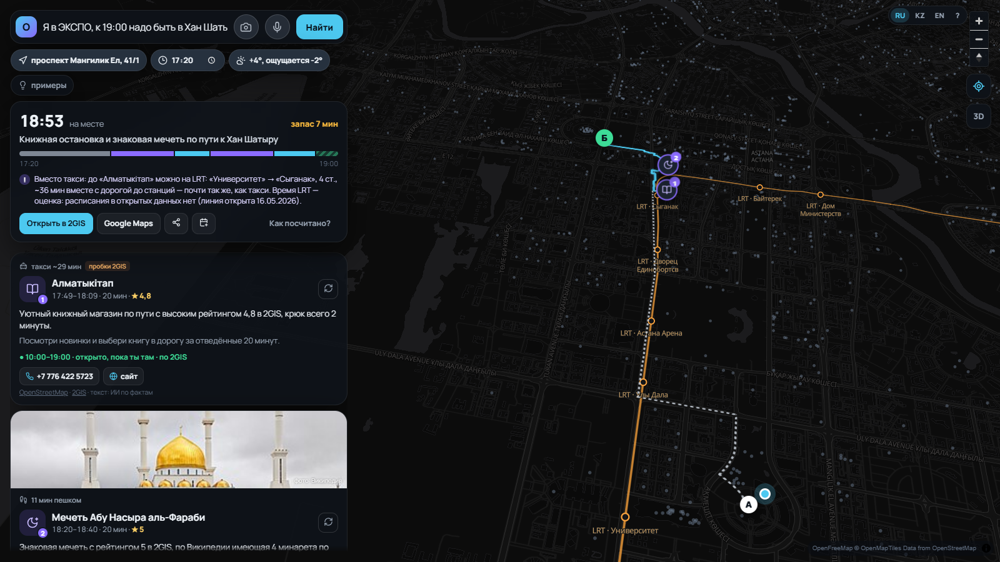
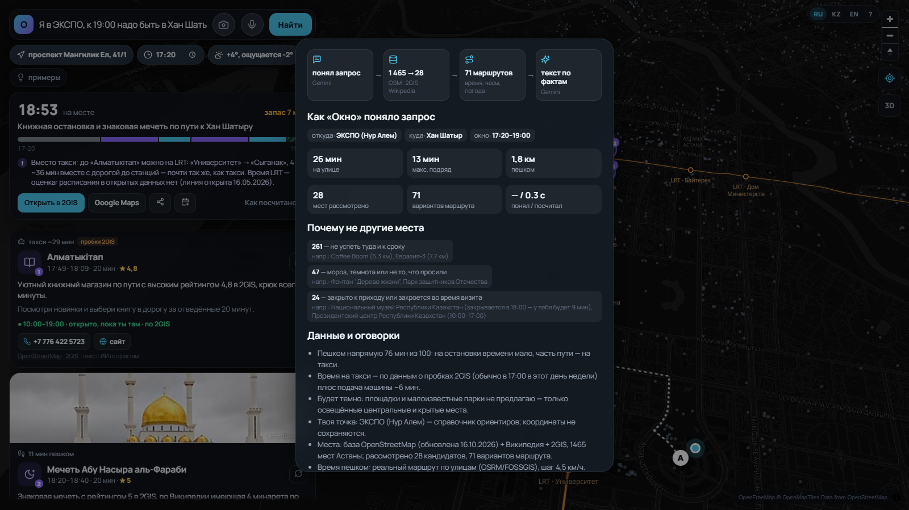
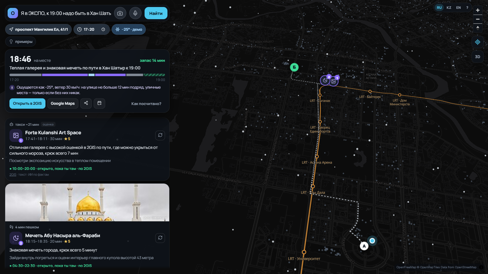
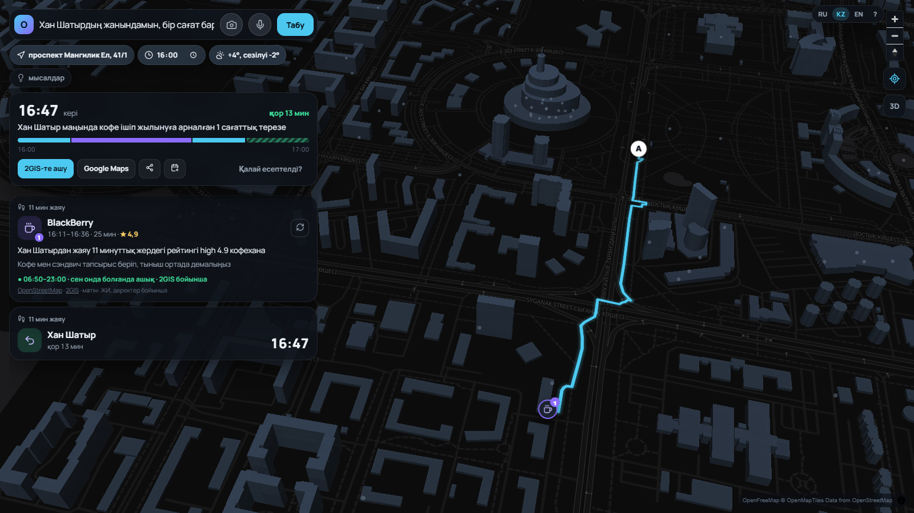
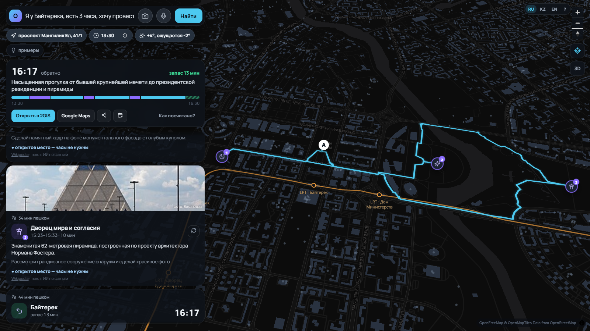
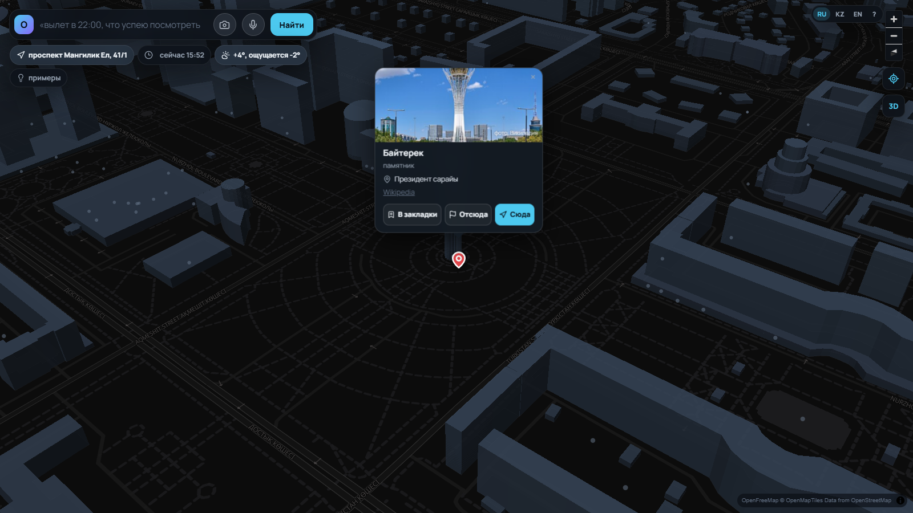
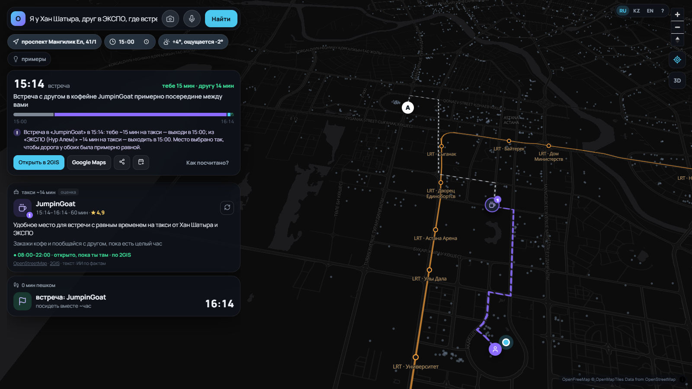
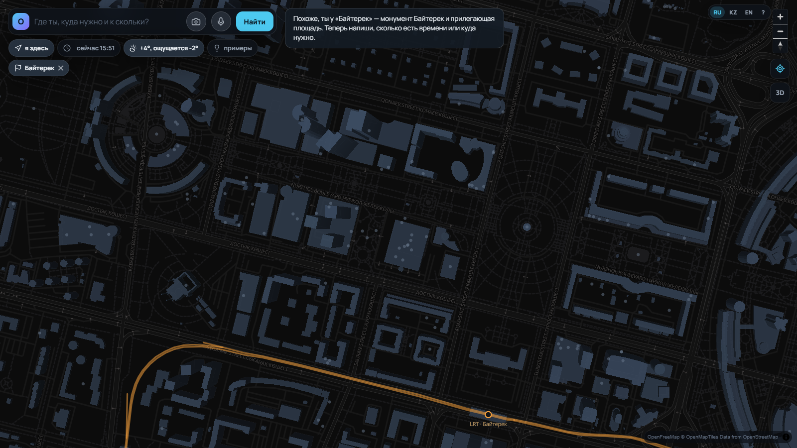
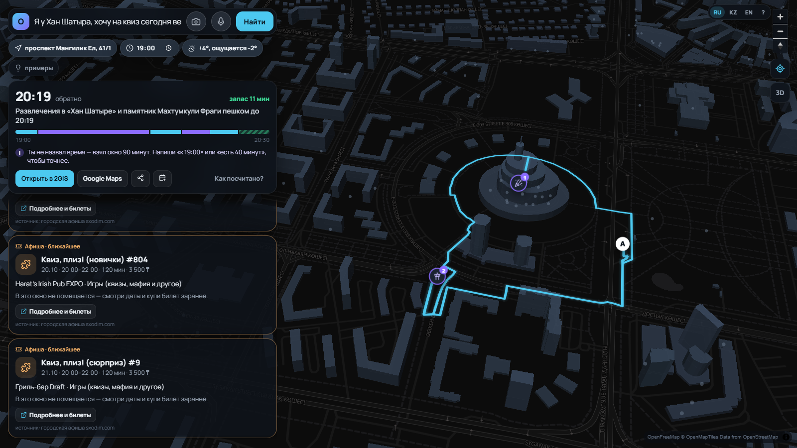
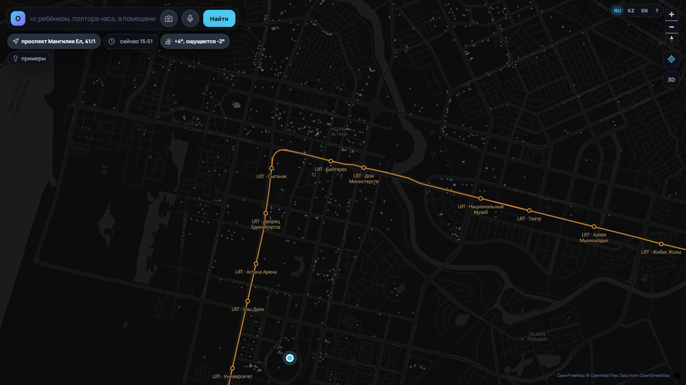
Те же 30 запросов — трём системам, проверка одним скриптом. Средняя колонка — та же модель Gemini, что внутри «Окна», но без наших данных:
| Claude (чат) | Gemini без данных | Окно = Gemini + RAG | |
|---|---|---|---|
| Ответов с ошибкой (закрыто, не успеть, опоздание) | 5 из 30 | 4 из 30 | 0 из 30 |
| Закрыто · не успеть · опоздание | 3 · 2 · 1 | 2 · 3 · 1 | 0 · 0 · 0 |
| Советов, которые невозможно проверить | 74% | 82% | 11% |
| Google Maps (Ask Maps) | 2GIS ИИ | ChatGPT / ИИ-гиды | Окно | |
|---|---|---|---|---|
| План под окно времени А → Б | — | — | частично | да |
| Часы работы на момент прихода | — | — | ошибается | да |
| Погода, ветер, прогноз в маршруте | — | — | — | да |
| Пробки для такси | да | да | — | да (2GIS) |
| Казахский · русский · английский | только EN | RU | да | да |
| Афиша, помещается ли событие в окно | — | — | — | да |
| Честно: «данных нет», источник у каждого места | — | — | — | да |
Ask Maps — 150+ стран с 08.2026, только на английском; ИИ-помощник 2GIS отвечает про одно место, а не строит план.
Польза городу: гости распределяются по малому бизнесу по пути, а не только по трём главным ТРЦ; данные о спросе — для городского планирования.
Уже в прототипе: страница «Спрос для города» — обезличенно, что ищут люди и чего им не хватило (каток закрыт в нужное время, нет часов работы в данных, смотровые далеко).
Себестоимость: ~0,1 цента за запрос (Gemini Flash), данные бесплатные или по ключу 2GIS.
Ограничения и риски
Что дальше
Свободное время — по пути и вовремя.
GitHub: github.com/rsduv/okno-astana
Документ со сценариями: docs/Okno_scenarios.pdf
Демо-видео: YouTube (ссылка в форме сдачи)
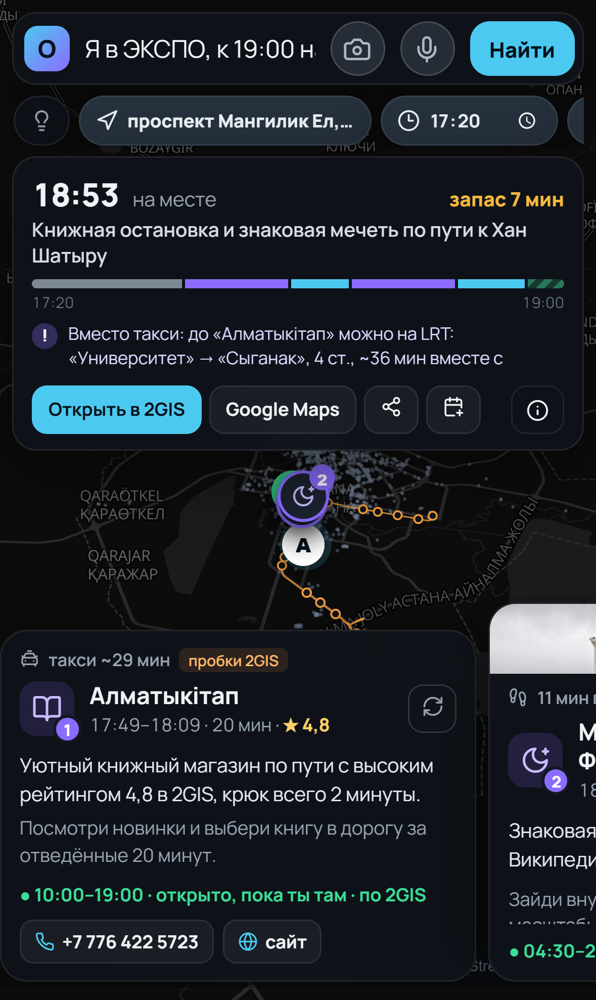